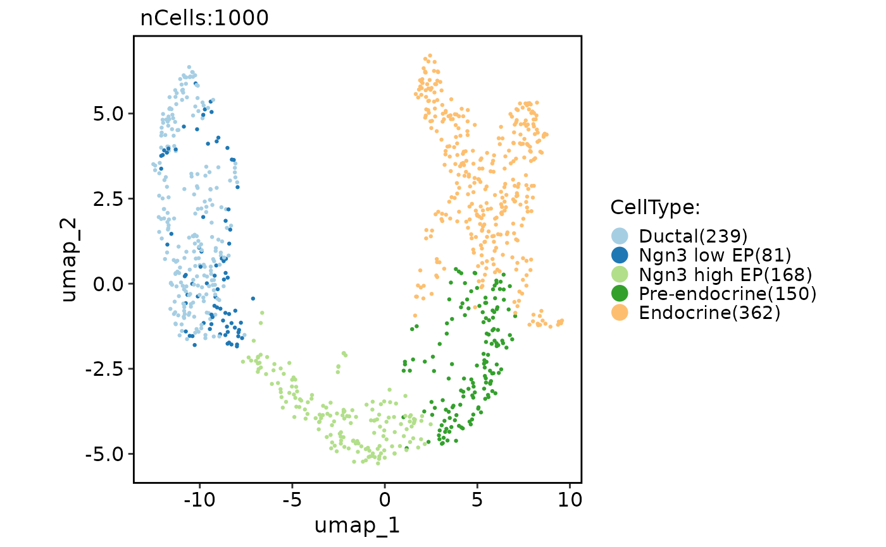

Run GLMPCA (generalized version of principal components analysis)
Source:R/Seurat-function.R
RunGLMPCA.RdRun GLMPCA (generalized version of principal components analysis)
Usage
RunGLMPCA(object, ...)
# S3 method for class 'Seurat'
RunGLMPCA(
object,
assay = NULL,
slot = "counts",
features = NULL,
L = 5,
fam = c("poi", "nb", "nb2", "binom", "mult", "bern"),
rev.gmlpca = FALSE,
ndims.print = 1:5,
nfeatures.print = 30,
reduction.name = "glmpca",
reduction.key = "GLMPC_",
verbose = TRUE,
seed.use = 11,
...
)
# S3 method for class 'Assay'
RunGLMPCA(
object,
assay = NULL,
slot = "counts",
features = NULL,
L = 5,
fam = c("poi", "nb", "nb2", "binom", "mult", "bern"),
rev.gmlpca = FALSE,
ndims.print = 1:5,
nfeatures.print = 30,
reduction.key = "GLMPC_",
verbose = TRUE,
seed.use = 11,
...
)
# Default S3 method
RunGLMPCA(
object,
assay = NULL,
slot = "counts",
features = NULL,
L = 5,
fam = c("poi", "nb", "nb2", "binom", "mult", "bern"),
rev.gmlpca = FALSE,
ndims.print = 1:5,
nfeatures.print = 30,
reduction.key = "GLMPC_",
verbose = TRUE,
seed.use = 11,
...
)Arguments
- object
An object. This can be a Seurat object, an assay object, or a matrix-like object.
- ...
Additional arguments to be passed to the glmpca function.
- assay
A character string specifying the assay to be used for the analysis. Default is NULL.
- slot
A character string specifying the slot name to be used for the analysis. Default is "counts".
- features
A character vector specifying the features to be used for the analysis. Default is NULL, which uses all variable features.
- L
An integer specifying the number of components to be computed. Default is 5.
- fam
A character string specifying the family of the generalized linear model to be used. Currently supported values are "poi", "nb", "nb2", "binom", "mult", and "bern". Default is "poi".
- rev.gmlpca
A logical value indicating whether to perform reverse GLMPCA (i.e., transpose the input matrix) before running the analysis. Default is FALSE.
- ndims.print
An integer vector specifying the dimensions (number of components) to print in the output. Default is 1:5.
- nfeatures.print
An integer specifying the number of features to print in the output. Default is 30.
- reduction.name
A character string specifying the name of the reduction to be stored in the Seurat object. Default is "glmpca".
- reduction.key
A character string specifying the prefix for the column names of the basis vectors. Default is "GLMPC_".
- verbose
A logical value indicating whether to print verbose output. Default is TRUE.
- seed.use
An integer specifying the random seed to be used. Default is 11.
Examples
pancreas_sub <- RunGLMPCA(object = pancreas_sub)
#> GLMPC_ 1
#> Positive: Cd44, Aard, Arx, Ppy, Epha3, Gm2109, Spock1, Lhfpl5, Stard5, Fst
#> Cidea, Lrpprc, Samd5, Cldn5, Gpr6, Ppp1r14c, Avp, Prss50, Hoxb2, Prl
#> Steap3, St6galnac5, Scn9a, Gm16006, Filip1, Pyy, Kcna5, Arhgef6, Pdcl2, Pou3f4
#> Negative: Sds, Isg15, Grin3a, Tmem178, 8430408G22Rik, Ctgf, Cxcl12, Col5a1, S100b, Xaf1
#> Ppp1r1b, Fmod, Akr1cl, Smoc2, Upk3b, Serpinb6b, Dcdc2a, 1700011H14Rik, Gsta3, Atp1a2
#> Aqp1, Adamts16, Adgrg6, Cryab, Reg4, Tmem171, Anxa3, Scx, Rtp4, Pdpn
#> GLMPC_ 2
#> Positive: Siglech, Ppp1r16b, 2010110K18Rik, Gm26839, Trem2, Jakmip3, Sval1, Milr1, Klk11, Bhlhe22
#> Fibcd1, Prrx2, Gpr153, Usp44, Csf2rb, Cd4, Fabp1, Krtap17-1, Tril, Piezo2
#> Tmc3, Tmem114, Apba2, Cyp21a1, Ankrd2, Sema3g, 5031425F14Rik, Hist1h2ah, Prdm8, Stom
#> Negative: Npy, Ins1, Sparcl1, Ins2, Syndig1l, Tmem215, Gad2, F13a1, Pde7b, Lpl
#> Gm10273, Trh, Iapp, Cntfr, Fcrls, Ms4a6d, Tnfaip8l2, Arhgap36, RP24-143K11.1, Gna15
#> P2ry1, Napsa, Gip, Mapt, G6pc2, Ppp1r1a, Gm36937, Adamtsl5, Nnat, Ctss
#> GLMPC_ 3
#> Positive: Sst, Stmn2, Msx1, Ptprz1, Cldn5, Entpd8, Col14a1, Hs6st3, Ddr2, Gip
#> Sbpl, Slamf9, Pde3a, Pdcl2, Fermt3, Depdc1b, Prl, Ptgs2, Cbln1, Krtap31-1
#> Nell1, Apobec4, Npy, Tcte3, Pde7b, Cyp2c70, Aqp3, Gp9, Fxyd5, Pou2f2
#> Negative: Ccl2, Gp2, Gm5786, Ms4a15, Gm6741, Fbn2, Gm38150, Foxq1, Reg1, Noxa1
#> Clca3a1, Guca2b, Fam181b, Dse, Igf1, P2rx1, Gc, Adamts2, Bok, Fmo1
#> Lgals3, Btbd19, Pfkp, Uap1l1, Fam129a, Gm11837, Cpa1, Cd83, Cpa2, Nupr1
#> GLMPC_ 4
#> Positive: Depdc1b, Cbln1, Ptprc, Parpbp, Troap, Kif14, Fam64a, Aif1, Acap1, Iqgap3
#> Ube2c, Lrp1b, 4931429I11Rik, Gprasp1, Cdkn2a, Ckap2l, Stil, Gm4950, Cenpf, Gabrg2
#> Hist2h2ac, Hist1h2af, Nid2, Pif1, Dock2, Cxcl1, Sapcd2, Ankle1, Hist1h2bn, Aurka
#> Negative: Sst, Slamf9, Krtap31-1, Ngf, Ddr2, Irs4, Entpd8, Ghrl, Olfml3, Ptgs2
#> Medag, Avpr1b, Pde3a, Kdr, Arsi, Fcrls, Sds, R3hdml, Hoxb4, AI849053
#> Gm12688, Tmem151a, Ccr1, Barx1, Stmn4, Cd177, Krtap3-2, Phf21b, Dok3, Irx3
#> GLMPC_ 5
#> Positive: Col1a2, Gcg, Casp1, AW112010, Lrrc17, Dkk2, Dusp2, Tcerg1l, Clec3b, Cd300lf
#> Ssu2, Mthfd1l, Fgb, Ublcp1, Fabp1, Srpx, H2-Ab1, Lpl, Igsf6, Gm2788
#> Calcr, Trpv2, Sval1, Disp2, Dclk1, Fanci, Kcng2, Pde3a, Hist1h2ao, Kng2
#> Negative: Gp9, Fxyd5, Kcnc1, Coro1a, Atp2a1, Gm17552, Nr2f2, Fcgr3, Spi1, Gm9767
#> Gm13373, Bnc2, Sulf1, Glod5, Ascl1, Msx1, Clic3, Cyp2c70, Cbln1, Bhlhe41
#> Gm2694, Dgkb, Ncf2, Stab1, Ifi27l2b, Hic1, Syndig1, Nol9, Ccdc80, Serpinb12
CellDimPlot(pancreas_sub, group.by = "CellType", reduction = "glmpca")
#> Warning: No shared levels found between `names(values)` of the manual scale and the data's fill values.
